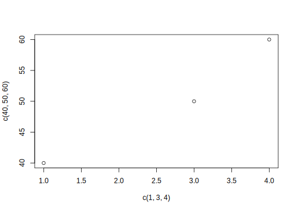
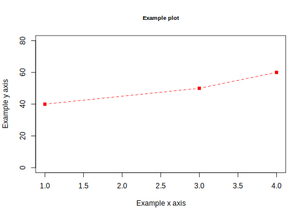
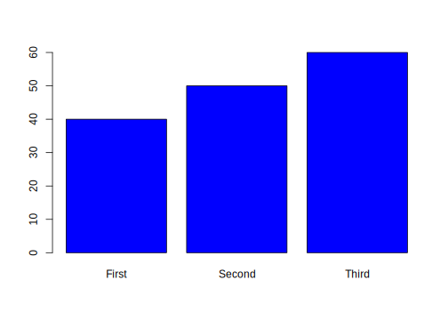

2.3 Data Wrangling
So you have some data…. AND it’s a mess!!!
A lot of the data we may encounter in courses has been simplified to allow students to focus on other concepts. We may have data that look like the following:
nicedata <- data.frame(gender = c("Male", "Female", "Female", "Male"),
age = c(16, 20, 66, 44),
voterturnout = c(1, 0, 1, 0))| gender | age | voterturnout |
|---|---|---|
| Male | 16 | 1 |
| Female | 20 | 0 |
| Female | 66 | 1 |
| Male | 44 | 0 |
In the real world, our data may hit us like a ton of bricks, like the below:
uglydata <- data.frame(VV160002 = c(2, NA, 1, 2),
VV1400068 = c(16, 20, 66, 44),
VV20000 = c(1, NA, 1, NA))| VV160002 | VV1400068 | VV20000 |
|---|---|---|
| 2 | 16 | 1 |
| NA | 20 | NA |
| 1 | 66 | 1 |
| 2 | 44 | NA |
A lot of common datasets we use in the social sciences are messy, uninformative, sprawling, misshaped, and/or incomplete. What do I mean by this?
- The data might have a lot of missing values. For example, we may have
NAvalues in R, or perhaps a research firm has used some other notation for missing data, such as a99. - The variable names may be uninformative.
- For example, there may be no way to know by looking at the data, which variable represents gender. We have to look at a codebook.
- Even if we can tell what a variable is, its categories may not be coded in a way that aligns with how we want to use the data for our research question.
- For example, perhaps you are interested in the effect of a policy on people below vs. 65 and over in age. Well, your age variables might just be a numeric variable. You will have to create a new variable that aligns with your theoretical interest.
- Datasets are often sprawling. Some datasets may have more than 1000 variables. It is hard to sort through all of them. Likewise, datasets may have millions of observations. We cannot practically look through all the values of a column to know what is there.
- Sometimes we have data shaped into separate columns when we’d rather it be reshaped into different rows.
- Maybe you have encountered a beautiful dataset that provides many measures of your independent variables of interest, but there’s one catch– it has no variable related to your outcome! You have to merge data from multiple sources to answer your research question.
Below are a few tips and resources. Ultimately, research is a constant debugging process. Loving R means seeing red error messages. The nice thing about R is that a lot of researchers constantly post coding tips and questions online. Google ends up being your friend, but it’s entirely normal to have to devote several hours (days?) to cleaning data.
2.3.1 Dealing with Uninformative Variable Names
Hopefully, there is an easy fix for dealing with uninformative variable names. I say “hopefully” because hopefully when you encounter a dataset with uninformative variable names, the place where you downloaded the data will also include a codebook telling you what each variable name means, and how the corresponding values are coded.
Unfortunately, this may not always be the case. One thing you can do as a researcher is when you create a dataset for your own work, keep a record (in written form, on a word document or in a pdf or code file) of what each variable means (e.g., the survey question it corresponds to or the exact economic measure), as well as how the values of the variables are coded. This good practice will help you in the short-term, as you pause and come back to working on a project over the course of a year, as well as benefit other researchers in the long run after you publish your research.
For examples of large codebooks, you can view the 2016 American National Election Study Survey and click on a codebook.
I recommend that once you locate the definition of a variable of interest, rename the variable in your dataset to be informative. You can do this by creating a new variable or overwriting the name of the existing variable. You might also comment a note for yourself of what the values mean.
## Option 1: create new variable
## gender 2=Male, 1=Female
uglydata$gender <- uglydata$VV160002
## Option 2: Overwrite
names(uglydata)[1] <- "gender2"2.3.2 Dealing with Missing Data
When we have a column with missing data, it is best to do a few things:
- Try to quantify how much missing data there is and poke at the reason why data are missing.
- Is it minor non-response data?
- Or is it indicative of a more systematic issue? For example, maybe data from a whole group of people or countries is missing for certain variables.
- If the data are missing at a very minor rate and/or there is a logical explanation for the missing data that should not affect your research question, you may choose to “ignore” the missing data when performing common analyses, such as taking the mean or running a regression.
- If missing data are a bigger problem, you may consider alternative solutions, such as “imputing” missing data or similarly using some type of auxilliary information to help fill in the missing values.
If we want to figure out how much missing data we have in a variable, we have a couple of approaches:
## Summarize this variable
summary(uglydata$gender)## Min. 1st Qu. Median Mean 3rd Qu. Max. NA's
## 1.000 1.500 2.000 1.667 2.000 2.000 1## What is the length of the subset of the variable where the data are missing
length(uglydata$gender[is.na(uglydata$gender) == T])## [1] 1If we choose to ignore missing data, this can often be easily accomplished in common operations. For example, when taking the mean we just add an argument na.rm = T:
mean(uglydata$VV1400068, na.rm=T)## [1] 36.5If we do a regression using lm or glm, R will automatically “listwise” delete any observation that has missing data (NA) on any of the variables in our regression model.
We should always be careful with missing data to understand how R is treating it in a particular scenario.
For example if we were to run table(uglydata$gender), we would have no idea there were missing data unless we knew that the total number of observations nrow(uglydata) was greater than 3. The table() command is omitting the missing values by default.
table(gender= uglydata$gender)## gender
## 1 2
## 1 22.3.3 Dealing with Variable Codings that Aren’t Quite Right
Often times the ways that variables are coded in datasets we get off-the-shelf are not coded exactly as how we were dreaming up operationalizing our concepts. Instead, we are going to have to wrangle the data to get them into shape.
This may involve creating new variables that recode certain values, creating new variables that collapse some values into a smaller number of categories, combining multiple variables into a single variable (e.g., representing the average), or setting some of the variable values to be missing (NA). All of these scenarios may come up when you are dealing with real data.
Chapter 2 of Kosuke Imai’s book Quantitative Social Science walks through some examples of how to summarize your data, subset the data (2.2.3), create new variables using conditional statements (Section 2.2.4, e.g., “If age is below 65, assign the new variable a value of”0“, otherwise, assign it a value of”1“), and creating new factor variables (2.2.5, e.g., coding anyone who is Protestant, Catholic, or Lutheran in the data as”Christian").
Here is a short video working through the example from 2.2.4 using conditional statements to construct new variables. It uses the resume dataframe, which can be loaded below.
resume <- read.csv("https://raw.githubusercontent.com/ktmccabe/teachingdata/main/resume.csv")R Studio has its own set of primers on various topics, including summarizing and working with data. See the Work with Data primer, as well as the full list of other topics. These will often rely on tidyverse coding.
2.3.4 Dealing with Incomplete Data (Merging!)
Sometimes in order to answer our research questions, we need to combine data from multiple sources. If we have a large amount of data, this may be quite daunting. Fortunately, R has several commands that allow us to merge or append datasets.
Here is a video working through examples of merging and appending data based on the tutorial below.
Here are a few resources on merging and appending data:
- Using the
mergecommand in R. See Explanation.- It will look for variable(s) held in common between datasets and join the datasets by the matching values on these variables.
- Appending data in R (e.g., Maybe you have one dataset from 2010 and another from 2012, and you want to stack them on top of each other). See Explanation.
Some merging problems are extremely difficult. For example, some researchers need to merge large datasets–like the voter file– with other administrative records. However, how someone’s name is displayed in one dataset might not match at all with the other dataset. For these complex problems, we might need “fuzzy matching.” Here is an R package that helps with this more complex case and related paper.
2.3.5 Dealing with Poorly Shaped Data
Data can come in a variety of shapes and sizes. It’s a beautiful disaster.
Sometimes it’s particularly useful to have data in wide formats, where every row relates to a particular unit of data– such as a country or a survey respondent. And perhaps each column represents information about that unit at a particular point in time. For example, perhaps you have a column with information on that subject for the past five years.
countrywide <- data.frame(country = c("Canada", "USA"),
economy2016 = c(10, 12),
economy2017 = c(11, 11),
economy2018 = c(9, 5),
economy2019 = c(13, 8),
economy2020 = c(12, 6))| country | economy2016 | economy2017 | economy2018 | economy2019 | economy2020 |
|---|---|---|---|---|---|
| Canada | 10 | 11 | 9 | 13 | 12 |
| USA | 12 | 11 | 5 | 8 | 6 |
However, other times, it would be more useful to you, as you dig into your data analysis, to have this information arranged in “long” format, such that every row is now a unit-year combination. You have a row for Canada in 2020, a row for Canada in 2019, and so on. Countries are now represented in multiple rows of your data.
countrylong <- data.frame(country = rep(c("Canada", "USA"),5),
year = 2016:2020,
economy= c(10, 12,11, 11,9, 5,13, 8,12, 6))| country | year | economy |
|---|---|---|
| Canada | 2016 | 10 |
| USA | 2017 | 12 |
| Canada | 2018 | 11 |
| USA | 2019 | 11 |
| Canada | 2020 | 9 |
| USA | 2016 | 5 |
| Canada | 2017 | 13 |
| USA | 2018 | 8 |
| Canada | 2019 | 12 |
| USA | 2020 | 6 |
Ultimately, different shapes of data are advantageous for different research questions. This means it is best if we have a way to (at least somewhat) easily shift between the two formats.
Here is a resource on how to “reshape” your data between wide and long from UCLA.
Here are a few additional resources:
- More on reshape
– For the tidyverse fans. Using
gather()andspread()in tidyverse from R for Data Science and explained by Chris Bail here.
2.3.6 Subsetting data by rows and columns
Sometimes we do not want to deal with our entire dataset for an analysis. Instead, we might want to only analyze certain rows (e.g., maybe if we are just studying Democrats, for example). Similarly, we might have a dataframe with 1000 columns, from which we are only using about 20. We might want to remove those extra columns to make it easier to work with our dataframes.
Below are a few examples of subsetting data and selecting columns. We will use the resume dataset from the Kosuke Imai QSS book for demonstration. This is a dataset from an experiment describing whether certain applicants, who varied in the gender (sex) and race (race) signaled by their name (firstname), received callbacks (call) for their employment applications.
Here is a short video working through these examples.
Let’s load the data.
resume <- read.csv("https://raw.githubusercontent.com/ktmccabe/teachingdata/main/resume.csv")Subset particular rows
To do this, put the row numbers you want to keep on the left side of the comma. Putting nothing on the right side means you want to keep all columns.
## numerically
resume[1,] # first row## firstname sex race call
## 1 Allison female white 0resume[1:4,] # first through 4th rows## firstname sex race call
## 1 Allison female white 0
## 2 Kristen female white 0
## 3 Lakisha female black 0
## 4 Latonya female black 0resume[c(1, 3, 4),] # 1, 3, 4 rows## firstname sex race call
## 1 Allison female white 0
## 3 Lakisha female black 0
## 4 Latonya female black 0Using the subset command with logical expressions > >= == < <= !=
## by logical expressions
women <- subset(resume, sex == "female")
women <- resume[resume$sex == "female", ] ## alternative
calledback <- subset(resume, call == 1)
calledback <- subset(resume, call > 0)And or Or statements & or |
blackwomen <- subset(resume, sex == "female" & race == "black")
bradbrendan <- subset(resume, firstname == "Brad" |
firstname == "Brendan")The tidyverse also has commands for subsetting. Here is an example using filter.
library(tidyverse)
blackwomen <- resume %>%
filter(sex == "female" & race == "black")Selecting particular columns
Note, now we are working on the right side of the comma.
## numerically
first <- resume[, 1] # first column
firstsecond <- resume[, 1:2] # first and second column
notfourth <- resume[, -4] # all but the fourth column## by labels
justthese <- resume[, c("firstname", "sex")]Using the select command
## install.packages("dplyr")
library(dplyr)
subdata <- resume %>% dplyr::select(firstname, sex) ## just these
subdata2 <- resume %>% dplyr::select(-firstname, -sex) ## all but these two2.3.7 Visualizing Data
There are many commands for plotting your data in R. The most common functions in base R are plot(), barplot() and hist(). You will see many examples throughout the notes with each of these functions.
To get you started, the most simple thing to note about the plot() command is that it is based on a coordinate system. You specify the x and y coordinates for which you want to plot a series of points.
For example, here is a plot at points 1,40; 3,50; and 4,60.
plot(x = c(1,3,4), y=c(40, 50, 60))
Instead of putting raw numbers as the coordinates, you can provide object names. E.g.,
xcoord <- c(1,3,4)
ycoord <- c(40, 50, 60)
plot(x = xcoord, y=ycoord)Beyond that, you can play around with many aesthetics in R, such as the type, pch, lty, as well as labels main, ylab, xlab, font sizes cex.main, cex.axis, cex.lab, and axis limits ylim, xlim. Below is an example. Play around with changing some of the specifications, and see how the plot changes.
xcoord <- c(1,3,4)
ycoord <- c(40, 50, 60)
plot(x = xcoord, y=ycoord,
main = "Example plot",
ylab= "Example y axis",
xlab = "Example x axis",
cex.main = .8,
ylim = c(0, 80),
xlim = c(1,4),
pch = 15,
col="red",
type = "b",
lty=2)
The function barplot takes a single vector of values. This can be a raw vector you have created or a table object or tapply object, for example, displaying the counts of different observations or means.
You can add a names.arg argument to specify particular names for each bar. Many of the other aesthetics are the same as plot. You can play around with adding aesthetics.
Example:
barplot(ycoord,
names.arg = c("First", "Second", "Third"),
col="blue")
For more on visualizing data, you can see the RStudio primers.
R also has a package called ggplot2 which includes the function ggplot and many elaborate ways to plot your data. The gg stands for the grammar of graphics. For a video introduction to ggplot I recommend watching Ryan Womack’s video from 27:30 on. It uses the data diamonds which can be loaded in R through the following command. See approximately minute 35 for an example with a bar plot.
library(ggplot2)
data(diamonds)2.3.8 Reproducing your steps
It is really important to keep a record of all of the changes you have made to the original data. An R script or R markdown file is a useful way to do this, so long as you add comments that explain what you are doing.
You want to get your code to a place when a stranger can open your R file, load your data, and reproduce each step you took to get to the final results— all while never even needing to contact you with questions. That can be difficult, but it’s good to aim for that high bar, even if sometimes, we fall short in how we are documenting each step.
This website provides a nice introduction to R Markdown, one tool for embedding R code inside textual documents. See here.
If you want to get advanced with reproducibility, you can watch Chris Bail’s on the subject describing the uses of R Markdown and GitHub among other tools for communicating and collaboration. He also links to other resources.